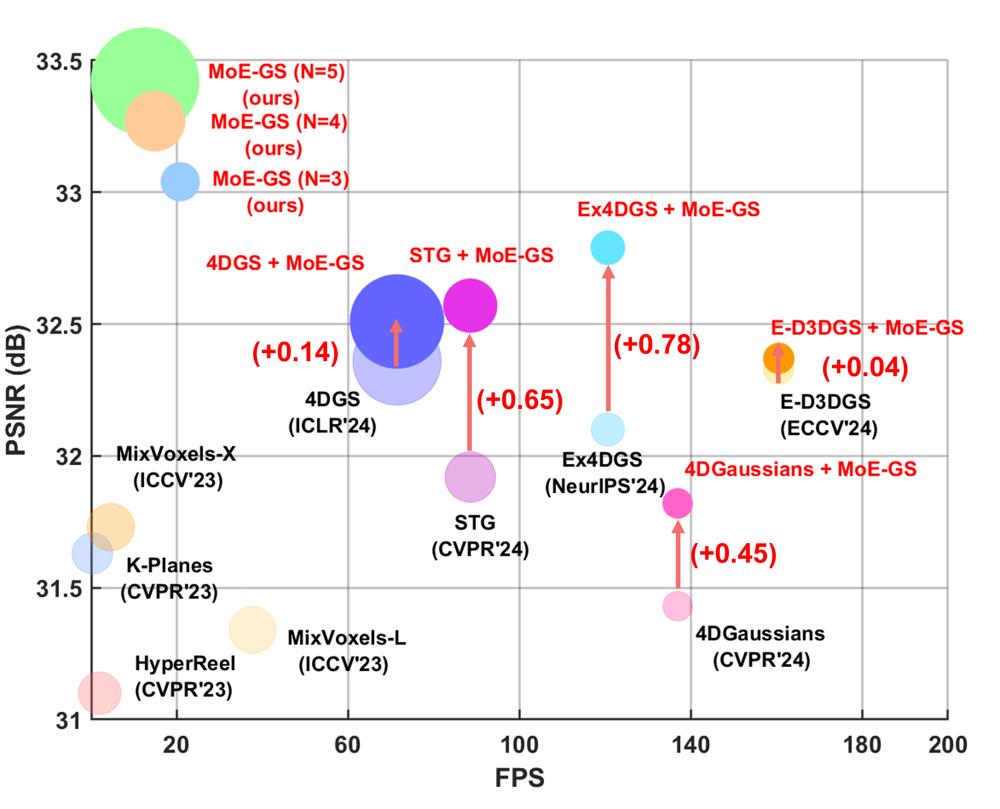

Recent advances in dynamic scene reconstruction have leveraged the rendering speed and quality of 3D Gaussian Splatting. However, existing Gaussian-based approaches typically specialize in specific deformation types, limiting their generalizability. In this paper, we propose Mixture of Experts for Dynamic Gaussian Splatting (MoE-GS), a unified framework that dynamically selects and blends multiple expert models using a learnable gating function. To the best of our knowledge, MoE-GS is the first method to introduce Mixture-of-Experts techniques into dynamic scene reconstruction. A key contribution of our approach is the introduction of per-Gaussian routing weights learnable parameters that modulate each expert's contribution. These weights are projected onto a 2D plane via weight splatting, generating adaptive, time- and view-dependent blending weights, significantly improving reconstruction fidelity. Additionally, we present a knowledge distillation pipeline utilizing both per-Gaussian and expert-specific 2D weights derived from the MoE model, refining individual experts to achieve near-MoE quality with substantially reduced computational cost. Our method achieves state-of-the-art results on multiple datasets, demonstrating its effectiveness across diverse dynamic scenes.
A key innovation of MoE-GS is the Volumetric-aware Pixel Router, which efficiently integrates expert contributions while preserving both spatial and temporal consistency. A naive approach would be to perform gating directly at the pixel-level on rendered 2D images, but this cannot effectively capture time- and view-dependent variations. Conversely, assigning weights directly at the Gaussian-level enables more adaptive gating but poses significant optimization challenges due to the difficulty of matching Gaussians across different experts. To overcome these limitations, we propose a novel Volumetric-aware Pixel Router.

Our framework first optimizes each expert using Structure-from-Motion (SfM) points before passing the results to the Router. The Router then generates gating values to adaptively blend the expert-rendered images in the 2D domain. We incorporate various dynamic scene reconstruction models as experts, including MLP-based, reformulation-based, interpolation-based, and polynomial-based approaches. By leveraging a Mixture of Experts (MoE), our framework effectively combines the strengths of each expert, enhancing reconstruction quality.
The proposed router processes Gaussians as inputs and introduces per-Gaussian routing weights, which are rendered through feature based splatting. The resulting 2D mixture features are then decoded using a lightweight MLP to compute time- and view-dependent 2D mixture opacity. Finally, a softmax function is applied to the expert outputs, generating the gating values for the final image synthesis.
Birthday (Ex4DGS)
Birthday (Ex4DGS)
Train (STG)
Train (STG)